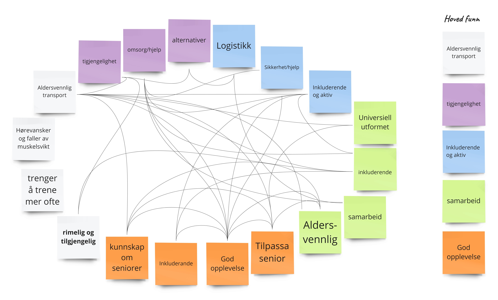

Problem Statement
As we age, it's important to maintain independence and live at home as long as possible. A key factor for a good quality of life is the ability to get out and meet others, which requires accessible transportation.
What new solutions can contribute to more age-friendly transportation in Gjøvik?
The Goal
The goal is to support seniors in living at home as long as possible by improving transportation options.
The Team and My Role
Our team consisted of two graphic designers and two interaction designers. My main role was to contribute valuable insights from an interaction design perspective, work with Figma, and serve as the communicator.
Timeline
2 months
Tools
Figma, Miro
The Design Process
We conducted several interviews with elderly and a transportation company, along with research on existing solutions and concepts both in Norway and abroad. We also gathered feedback and conducted user testing with fellow students and guerrilla testing to refine our approach.
The research methods:

Interview
We have conducted interviews with elderly individuals and engaged in discussions with transportation services in Gjøvik to understand their transport challenges.
Elderly users are generally satisfied with the on-demand transportation service but experience issues with waiting times, particularly during delays. For example, waiting in the cold for up to 30 minutes without information on when the taxi will arrive is a significant concern.
Local taxi companies report difficulties in meeting demand and need a solution that increases the number of trips without increasing the number of vehicles, which is both economically and resource-wise challenging.
Concept and App Functionality
Persona
Our app is designed for Kari, a 74-year-old who wants to make shopping, running errands, and joining social activities easier. We created the app to help Kari manage these tasks more conveniently and stay active in her city’s social life. Our goal is to make it simple and accessible for her.
Main Features
UI Design

The app interface features large text and simple buttons to ensure easy readability. We have emphasized universal design principles to ensure the app is accessible and user-friendly for everyone, regardless of age or physical abilities.
Prototype
Poster and diploma

What have I learned from this project
Through this project, I have learned how to better collaborate with other fields and how our shared expertise reflects in the final product. Interviewing the user group and professionals involved was also beneficial, as it helped incorporate their feedback into the design.
At the end of the semester, we presented our work to the client and received feedback on the final product. Even after completing the project, it's exciting to see that there are always different ways to improve.